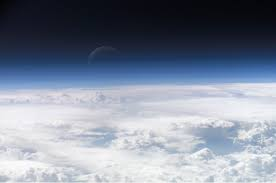

EARTH
Welcome Kids! there you will find all you want to now about our planet Earth
ALL ABOUT EARTH
"Let's have a quick game: Explore the wonders of our planet 🌍 with just a click! Dive into the vast expanse of the oceans, trek across the majestic landscapes of land, and follow the meandering paths of rivers. Click on each part of the Earth to uncover fascinating details and insights about its diverse ecosystems and geographical features. Embark on an interactive journey of discovery and learn more about the beauty and complexity of our world!"
CLICK ON THE IMAGE TO KNOW MORE

Our home planet Earth is a rocky, terrestrial planet. It has a solid and active surface with mountains, valleys, canyons, plains and so much more. Earth is special because it is an ocean planet. Water covers 70% of Earth's surface.
Structure and Surface:
Earth is a terrestrial planet. It is small and rocky. Earth's atmosphere is the right thickness to keep the planet warm so living things like us can be there. It’s the only planet in our solar system we know of that supports life. It is mostly nitrogen, and it has plenty of oxygen for us to breathe.
Time on Earth:
A day on Earth lasts a little under 24 hours. One year on Earth lasts 365.25 days. That 0.25 extra means every four years we need to add one day to our calendar. We call it a leap day (in a leap year).
Earth’s Neighbors:
Earth has just one Moon. It is the only planet to have just one moon. Earth has lots of spacecraft watching it. There is still a lot we can learn about our home planet. Earth is the third planet from the Sun in our solar system. That means Venus and Mars are Earth’s neighboring planets.
Deeper Knowledge:
Atmosphere:
Our atmosphere is made mostly of nitrogen and has plenty of oxygen for us to breathe.The atmosphere also protects us from incoming meteoroids, most of which break up in our atmosphere before they can strike the surface as meteorites.
Since we live here, you might think we know all there is to know about Earth. Not at all, actually! We have a lot we can learn about our home planet. Right now, there are many satellites orbiting Earth taking pictures and measurements. This is how we can learn more about weather, oceans, soil, climate change, and many other important topics.
properties of planet earth:
Earth has just one Moon. It is the only planet to have just one moon. Earth has lots of spacecraft watching it. There is still a lot we can learn about our home planet. Earth is the third planet from the Sun in our solar system. That means Venus and Mars are Earth's neighboring planets.
Distance from the Sun to planets in astronomical unit:
| planet | Distance from the sun (au) |
|---|---|
| Mercury | 0.39 |
| Venus | 0.72 |
| Earth | 1 |
| Mars | 1.52 |
| Jupiter | 5.2 |
| Saturn | 9.54 |
| Uranus | 19.2 |
| Neptune | 30.06 |
This mean that the Earth is the thrid planet from the sun, which is a unique position for the Earth.
Position of the earth:
Earth is in what is called the habitable zone: the exact distance from the Sun where it isn't too hot or too called, so we have liquid water. Further away, it would have been freezing cold. Any closer to the Sun, and we would al be cooked alive.